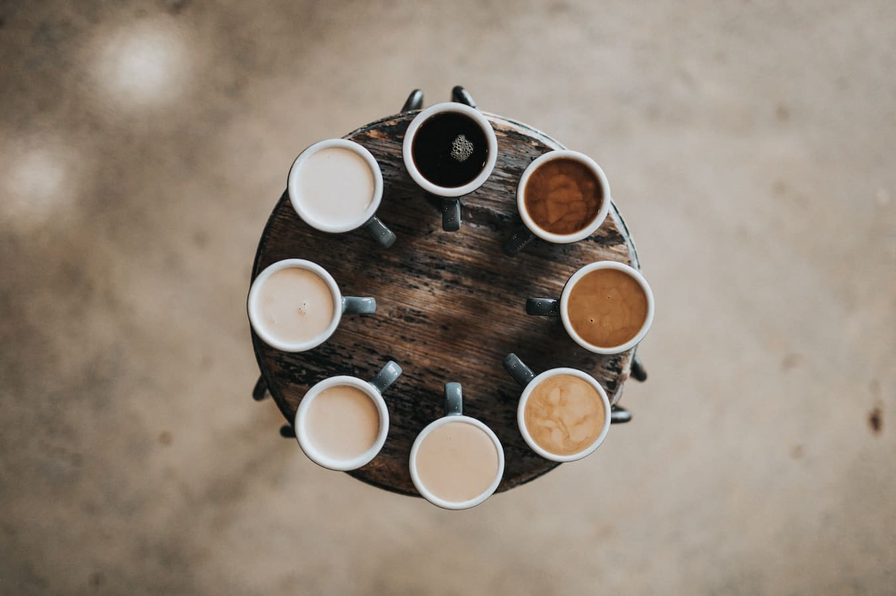

C O F F E 5 0 3
Café 100% Salvadoreño
El Salvador tiene Seis Regiones Cafetaleras: Apaneca Ilamatepec, Alotepec Metapán, Tecapa Chinameca, El Bálsamo Quezaltepec, Cacahuatique y Chichontepec. Aquí es donde se cultiva el café más especial del mundo. Para obtener una buena extracción de una taza de Café De El Salvador es necesario que al moler el café consideres lo siguiente: Tener una molienda adecuada según el método de preparación que utilices. Asegurarse que el café sea recién tostado para disfrutar de todos los atributos.
Café de El Salvador conquista a todas las personas que tienen la oportunidad de probar una taza del café más especial del mundo. El esfuerzo, la pasión y dedicación con la cual los artesanos de café cultivan en las fincas se nota en cada cereza, grano y taza de café.

- 